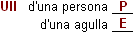

Exercicis de pràctica i reforç

1) Hi ha uns quants sufixos que ens ajuden a crear noms que expressen col·lectivitat, conjunt o quantitat (p. ex.: -ada, -am, -ar, -at, -atge, -eda, -eria, etc.). Busqueu derivats que expressin aquests conceptes a partir dels mots següents:
1) bessó 7) roca
2) veí 8) branca
3) torró 9) castanya
4) faig 10) cargol
5) ploma 11) equip
6) fill 12) cristall

2) Identifiqueu els prefixos d'aquestes paraules i classifiqueu-los en els apartats de la taula:
3) Digueu si els mots de les següents parelles signifiquen el mateix o no (caldrà que feu servir el diccionari):
4) Escriviu la paraula amb el prefix corresponent a cada mot (anti-, extra-, pre-, mal-, sobre-, contra-, ultra-):
5) Escriviu l'infix dels mots següents:
6) Paraules com ull, coll o braç tenen un Sentit Propi (P) com a parts del cos i diversos Sentits Especialitzats (E) que per semblança o analogia han adquirit al llarg de la seva evolució:

Digueu per a cada una de les paraules següents quin és el sentit propi (P) i quin l'especialitzat (E):
7) Busqueu per a cada mot un possible sentit especialitzat:
Serra:
(P) eina
(E)
Illa:
(P) tros de terra voltat d'aigua
(E)
Ploma:
(P) part d'una au
(E)
Pota:
(P) part d'un animal
(E)
Antena:
(P) part d'un insecte
(E)
8) Indiqueu ara el sentit propi i el sentit especialitzat dels mots següents:
Tronc
Cadena
Capa
Faixa
Granota